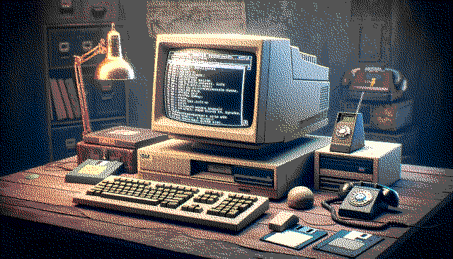

Firefox setup & Essential Addons

Essential Addons
https://addons.mozilla.org/en-US/firefox/
DuckDuckGo Privacy Essentials
Facebook Container
Firefox Multi-Account Containers
Proton Pass: Free Password Manager
uBlock Origin
Back to home